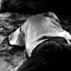
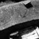
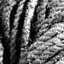

... pochi giorno dopo a Cap Manuel il lembo più meridionale della penisola su cui sorge Dakar. Qui circondati dalle ambasciate e dalle ville presidenziali vivono e lavorano, in bunker costruiti dai francesi durante la seconda guerra mondiale, alcuni pescatori. I visi segnati e schietti, ed i corpi asciutti di questi uomini tradiscono la fatica di giornate sicuramente non facili passate a pescare su rocce laviche a picco sul mare. Le onde dell'oceano incontrano qui quelle provenienti dall'ampio golfo che la costa a Est di Dakar disegna, manifestandosi in tutta la loro potenza. Entrano infatti nelle strette gole laviche, vaporizzandosi rumorosamente nel tentativo di risalirle...
Sulla sottile striscia di un azzurro pallido si stagliano ad intervalli regolari le figure dei pescatori, in piccoli gruppi, tesi nel recupero delle reti...
...sono per lo più bambini dai larghi sorrisi e dai corpi scultorei a tirare le funi, in una sorta di "gioco" scandito dal capo cordata, che ritmicamente li sprona con brevi cantilene ripetute all'infinito per attutire lo sforzo. Gli anziani silenziosi, dirigono le operazioni con espressione severa, quasi delle maschere disegnate dal mare, segnate da solchi profondi, come i ceppi a cui assicurano i pochi metri di fune che via via vengono faticosamente riconquistati. |